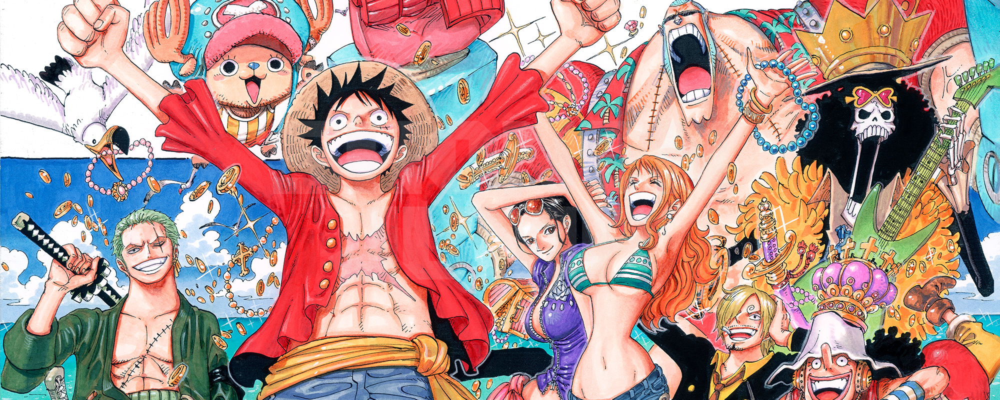

Welcome to the One Piece Webside!
Featured Article
Overview Artificial Devil Fruits are created based on Vegapunk's research on how Devil Fruits affect the user's Lineage Factor, making practical applications of such effects on the blood. However, Vegapunk's and Caesar's development methods were quite different. While Vegapunk utilized the Lineage Factor of an already existing fruit user to develop his artificial fruit, Caesar utilized the Lineage Factor of regular animals. Thus, Caesar was only ever capable of producing replicas of Zoan-type fruits, whereas Vegapunk found a way to replicate Paramecia fruit powers as well.[3] Both Vegapunk's and Caesar's artificial fruits take away the consumer's ability to swim much like a natural Devil Fruit.[4][5] However, as evidenced by the unusual effects of both scientists' fruits compared to natural Devil Fruits, producing a normal Devil Fruit through manmade means is extremely difficult, if not impossible, to the point that even Vegapunk, the smartest man in the world, has serious difficulty successfully pulling it off.[1] Artificial Zoan Zoan-type Devil Fruits are the only ones that can be produced artificially. Virtually all Fruits of the Zoan category can be recreated, even the Mythical ones. However, it requires a vast amount of both money and time. Artificial Zoans look very different from regular Devil Fruits; instead of the classic swirls, they have a pattern of ring. Sometime within the last 38 years, Vegapunk created a fruit using Kaidou's lineage factor, it was later consumed by Kozuki Momonosuke and it gave him the ability to transform into a dragon. Momonosuke was even able to replicate the other power that Kaidou's dragon form granted him, such as the ability to generate Flame Clouds (焔雲 Homura-gumo?) that could also be used as stepping stones, giving the appearance of flight.[6] Vegapunk had deemed the fruit to be a "failure". Because of this, the World Government believes that the fruit didn't yield satisfactory results in proportion to resources (time, materials, money, etc) spent. However, it was then revealed by Vegapunk himself to be for no other reason than because the dragon Momonosuke transformed into was the wrong color, being pink instead of blue like Kaidou.[7] Momonosuke's initial usage of the fruit appeared to have several flaws which may have contributed to it being deemed a failure, but all of these have since been shown to be a result of Momonosuke's young age and lack of experience: A few moments after consuming the fruit, Momonosuke transformed automatically, and he claimed that he did not know how to revert to Human Form.[1] Later, he was shown to be able to accomplish the task, albeit ending up completely naked, which is unlike that of a natural Zoan.[8] He has since transformed in and out of his Beast Form willingly while retaining his clothes and it is unclear why he lost his clothes when he first transformed back into his Human Form. The size of Momonosuke's full Beast Form transformation was also much smaller than that of the natural fruit's transformation, barely being big enough to carry a normal-sized human. However, this was shown to be a result of Momonosuke's age, as when Shinobu matured his body by 20 years, Momonosuke's Full Beast form was much closer in size to Kaidou's.[9] After achieving the form of a full-sized dragon, Momonosuke likewise gained a massive increase in his strength and durability, as he could easily smash through walls by simply crashing into them and is able to hurt Kaidou, in his Beast Form, with a bite. He also gained better control over his ability to produce Flame Clouds, being able to uses them fly himself and Luffy at high speed all the way back up to Onigashima from the shores of Wano Country.[10] After some initial difficulties,[11] Momonosuke was able to breath fire as Kaidou can.[12]
